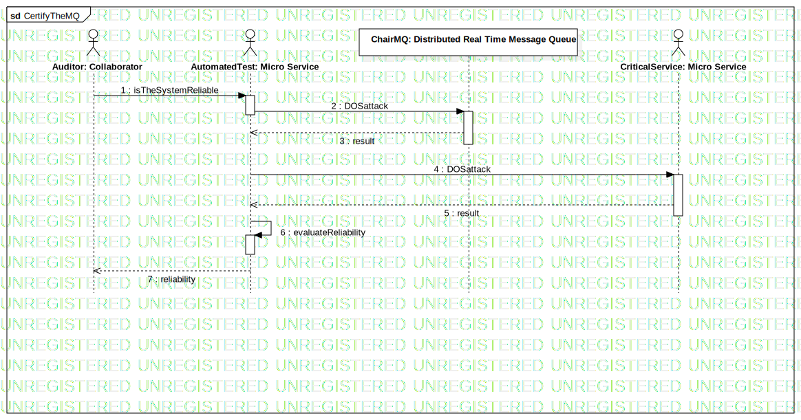

CertifyTheMQ
UMLInteraction
Untitled
::
Process View
::
Compliance
::
CertifyTheMQ
Description
none
Diagrams

CertifyTheMQ
Participants
ChairMQ: Distributed Real Time Message Queue
AutomatedTest: Micro Service
Auditor: Collaborator
CriticalService: Micro Service
Messages
isTheSystemReliable (Auditor→AutomatedTest)
DOSattack (AutomatedTest→ChairMQ)
result (ChairMQ→AutomatedTest)
DOSattack (AutomatedTest→CriticalService)
result (CriticalService→AutomatedTest)
evaluateReliability (AutomatedTest→AutomatedTest)
reliability (AutomatedTest→Auditor)
Properties
Name
Value
name
CertifyTheMQ
stereotype
null
visibility
public
isReentrant
true
Owned Elements
CertifyTheMQ